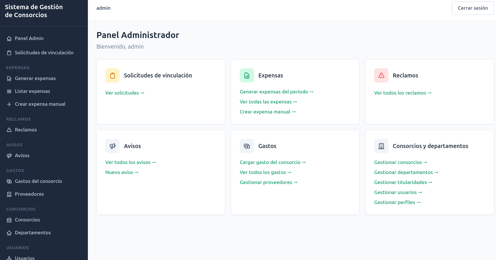
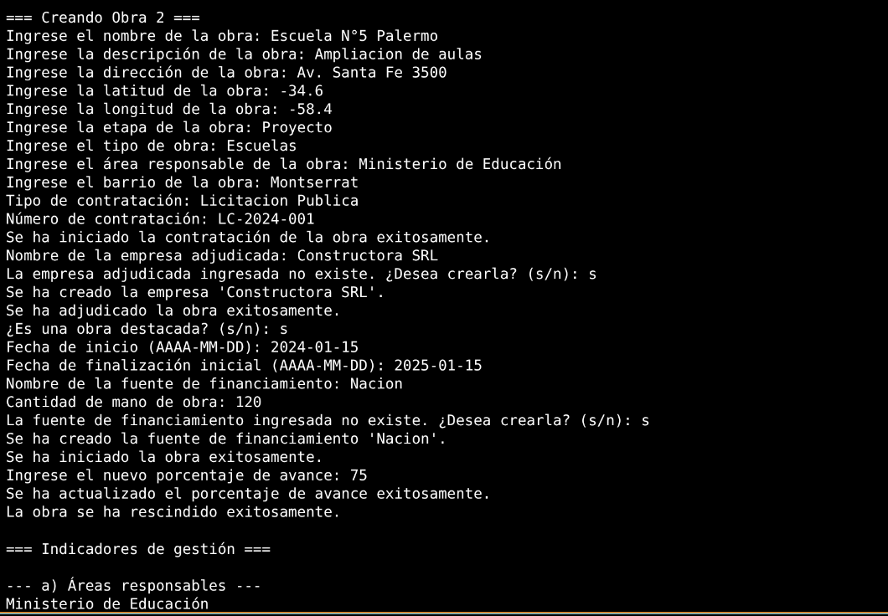
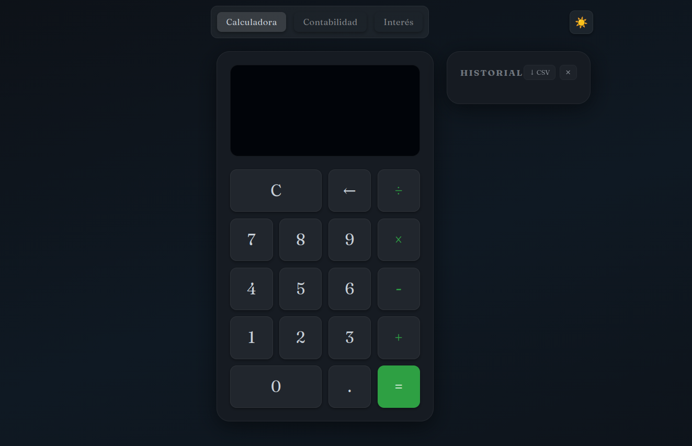
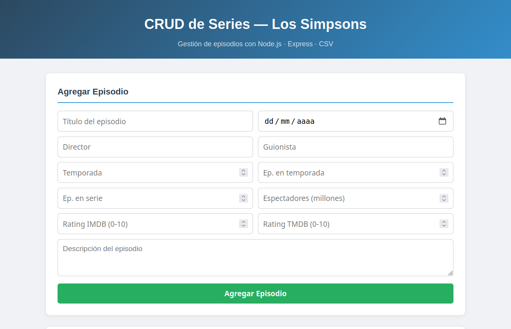
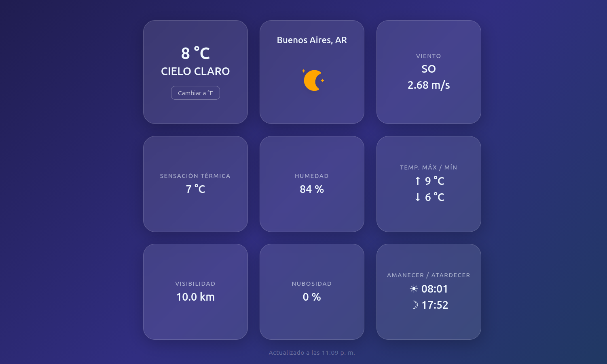

Soy desarrollador de software con background en finanzas, administración y docencia — un perfil que me permite construir soluciones entendiendo tanto el código como el contexto en el que se usa.
Estoy terminando la Tecnicatura Superior en Desarrollo de Software y trabajo con Python, Django, React, Node.js y Tailwind. Me interesan especialmente los proyectos vinculados a educación y tecnología.
Finalizando la carrera. Formación integral en desarrollo de software.
Gestión contable en estudio contable: liquidaciones de expensas, declaraciones juradas impositivas, conciliaciones bancarias, atención a proveedores y elaboración de balances.
Asistencia en el dictado de la materia Introducción a Base de Datos en nivel terciario.
Clases particulares de Economía, Historia y Ciencias Sociales para nivel secundario y terciario. Pasantía como preceptor en nivel secundario (2009).

Sistema web para la gestión integral de consorcios: departamentos, expensas, reclamos y avisos, con roles diferenciados para administradores y consorcistas.

Software en Python para gestionar obras urbanas de Buenos Aires usando un dataset público del gobierno de la ciudad, con POO y persistencia ORM.

Calculadora con historial de operaciones, exportación a CSV y formato numérico contable argentino. Desarrollada con ES Modules nativos, localStorage y soporte completo de teclado.

Aplicación web fullstack para gestionar registros de series de televisión con operaciones CRUD completas a través de una API REST.

Clima en tiempo real con geolocalización automática, toggle °C/°F, íconos SVG animados por condición y hora, y 33 tests para funciones puras. Diseño glassmorphism responsive.
¿Tenés un proyecto en mente? ¿Querés ponerte en contacto? Escribime y te respondo a la brevedad.